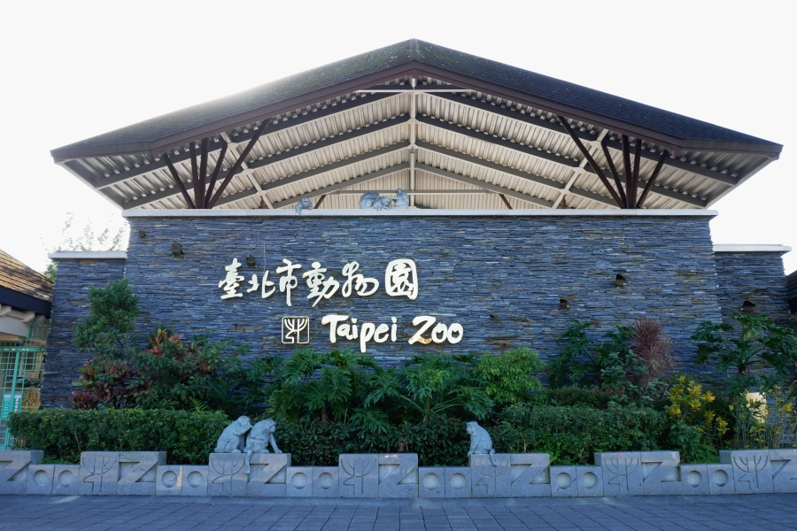

景點介紹
無尾熊是在南半球澳洲大陸上著名的有袋目動物。無尾熊屬於夜行性動物，白天大部分的時間都在睡覺和休息，可達17-20小時。 牠們最愛吃新鮮桉(尤加利)樹的嫩枝葉。成年的雄性還會用胸腺的分泌物在樹幹上做標記，以留下氣味來劃定自己的地盤。 來自澳洲昆士蘭黃金海岸市的「庫倫賓野生動物保護區」，代表城市友誼並肩負保育、教育使命的無尾熊們，自引進以來一直都是眾所矚目的焦點。無尾熊館設有多個獨立空間，每間屋頂都有天窗可以讓陽光照射進來。在適當天氣時，無尾熊偶爾也會到戶外展示場活動，享受溫暖的陽光。 1999年8月首度來臺的兩隻公無尾熊，牠們是來自於澳洲昆士蘭黃金海岸市的「庫倫賓野生動物保護區」，不但代表兩市之間的深厚友誼，也肩負了保育和教育的重要使命。而母無尾熊，也在2001年9月來到臺北與牠們相聚。隨後無尾熊寶寶在眾人的期盼下出生，當母子無尾熊相依偎的畫面呈現在遊客面前時，大家不禁讚嘆生命的奧妙，同時也感到十分溫馨呢！2011、2018年陸續又有來自澳洲同一保護區的新成員加入，使無尾熊館變得更生氣蓬勃，也更有人氣喔！
